Unsere Maschinen — zum Aufklappen.
Klicken Sie auf einen Bereich, um die zugehörigen Maschinen zu sehen. Jeden Prozessschritt fertigen wir selbst — einzeln oder als komplette Linie.
Annehmen & Bunkern
Schonende Aufnahme direkt vom Anhänger oder Container. Annahmebunker, Aufgabetrichter und Dosierbänder — modular erweiterbar.
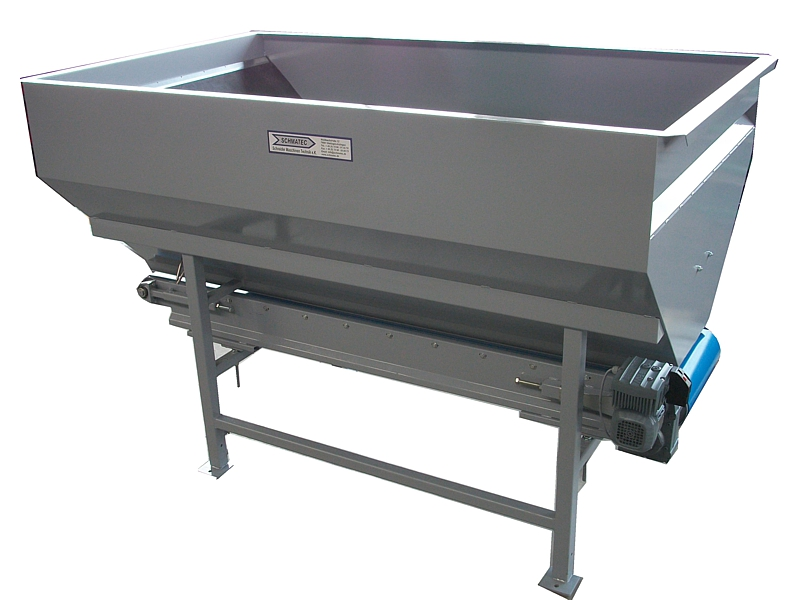
Enterden
Trommel- und Sieblösungen, die Erde, Feinanteile und Kraut zuverlässig abtrennen, bevor die Ware weiterläuft.
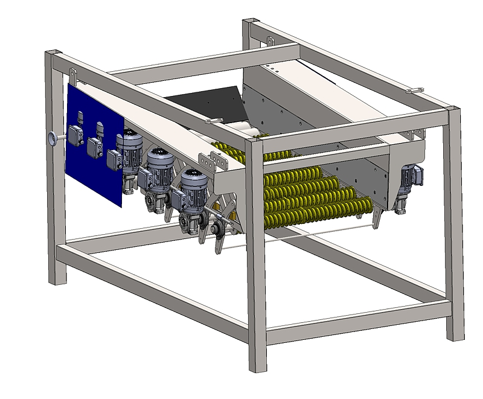
Entsteinen
Steinausschleuser per Wasserbad oder Schwerkrafttrennung — schützt die nachfolgenden Maschinen und die Produktqualität.
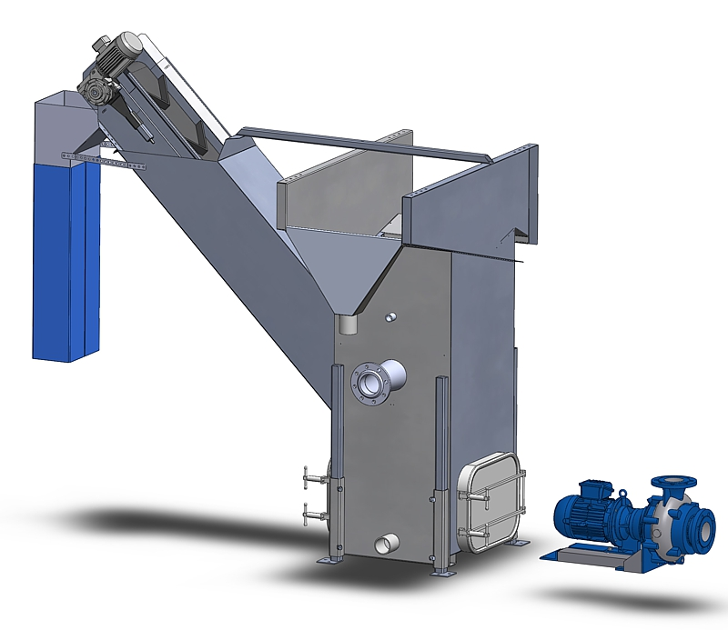
Absondern
Kleinteileentferner und Absonderbänder zum sicheren Abscheiden von Beifang, Kraut, Fehlteilen und Kleingut, bevor die Ware weiterläuft.
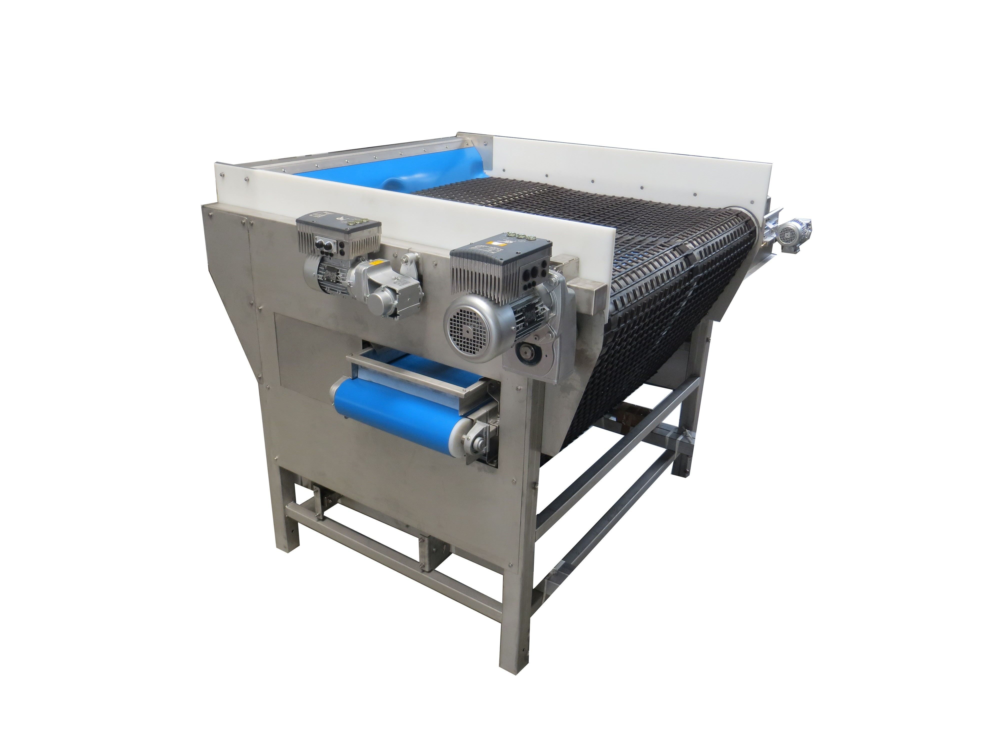
Fördern
Bandförderer, Steigbänder und Schwenkbänder — auf Halle und Produkt zugeschnitten.

Waschen & Polieren
Trommel-, Bürsten- und Tauchwäsche, Trockenpolierer mit Wasserrückführung — hygienisch konstruiert, lebensmittelecht.
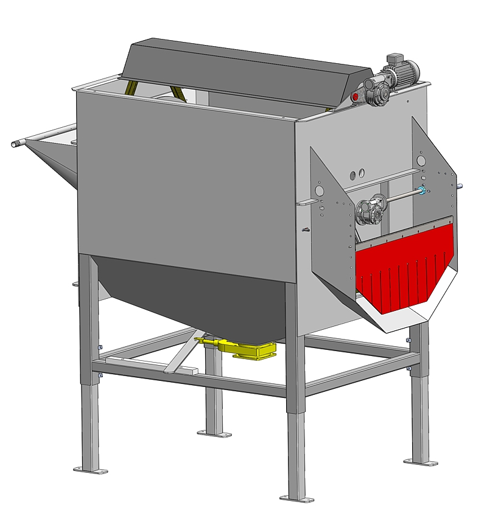
Trocknen
Luft-, Schwamm- oder Vakuumtrocknung im Anschluss an die Wäsche.
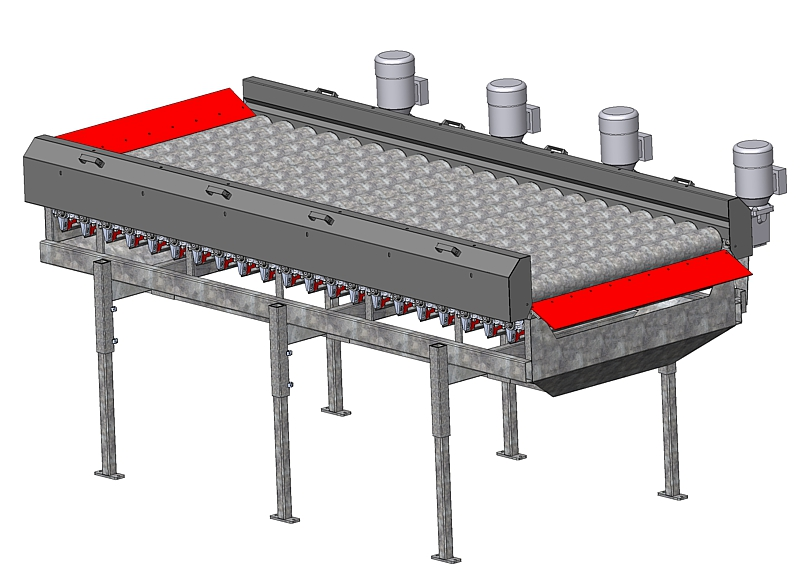
Kühlen
Kühlbad und Kühlband für längere Lagerfähigkeit und Haltbarkeit der Ware.

Sortieren
Mechanische Größensortierung, optische Sortierung und manuelle Verlese- und Sortiertische — einzeln oder kombiniert.
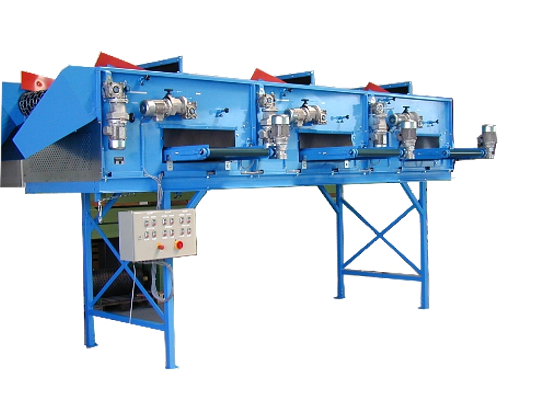
Wiegen & Befüllen
Waagen, Spezialwaagen, Sack-, Netz- und Kartonlinien für die Abpackung.
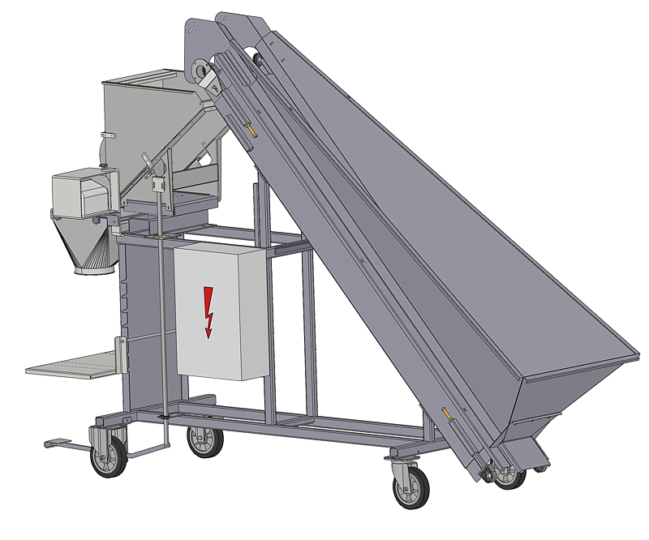
Wasseraufbereitung
Filter, Sedimentation und Wasserrückführung für einen sparsamen, nachhaltigen Betrieb.
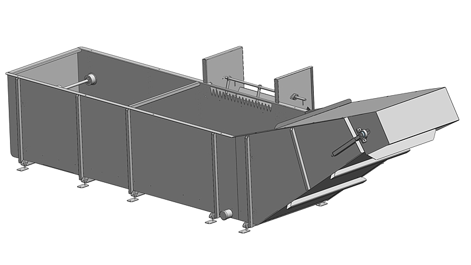
Kürbisaufbereitung
Kürbisbürstmaschine, Kürbisverleseband und Kürbiswanne — entwickelt mit und für Kürbis-Produzenten.

Süßkartoffelaufbereitung
Komplette Aufbereitungslinien für Süßkartoffeln — schonendes Annehmen, Waschen, Trocknen, Sortieren und Verpacken. Ein Schmatec-Schwerpunkt mit eigens dafür entwickelten Maschinen.
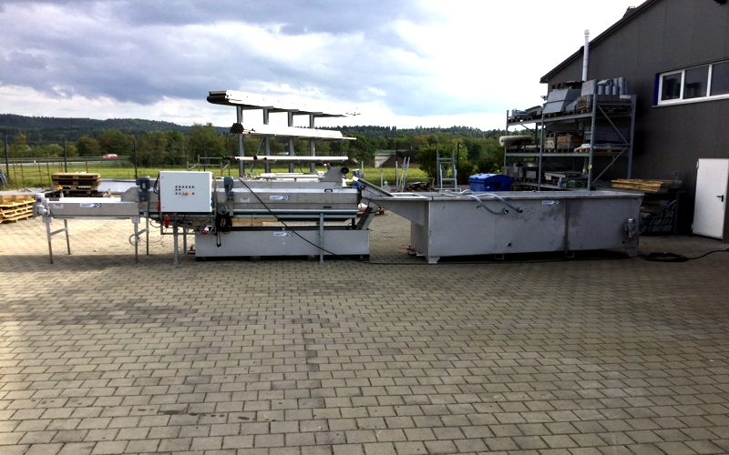
Sondermaschinen
Selleriewurzelschneider, Zitrusaufbereiter, schwenkbares Siebband, Kaffeeaufbereitung und weitere Sonderlösungen — sagen Sie uns, was Sie brauchen.
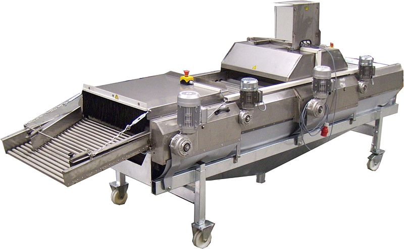
Weitere Maschinenbezeichnungen auf Anfrage — bei Fragen zu einem konkreten Typ sprechen Sie uns an.